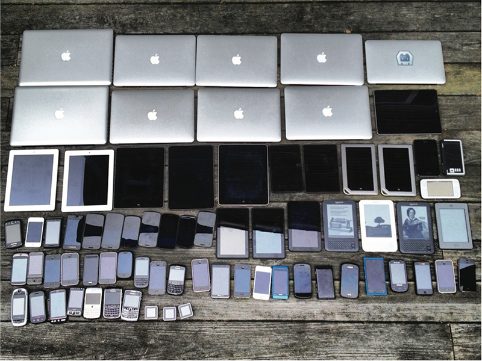
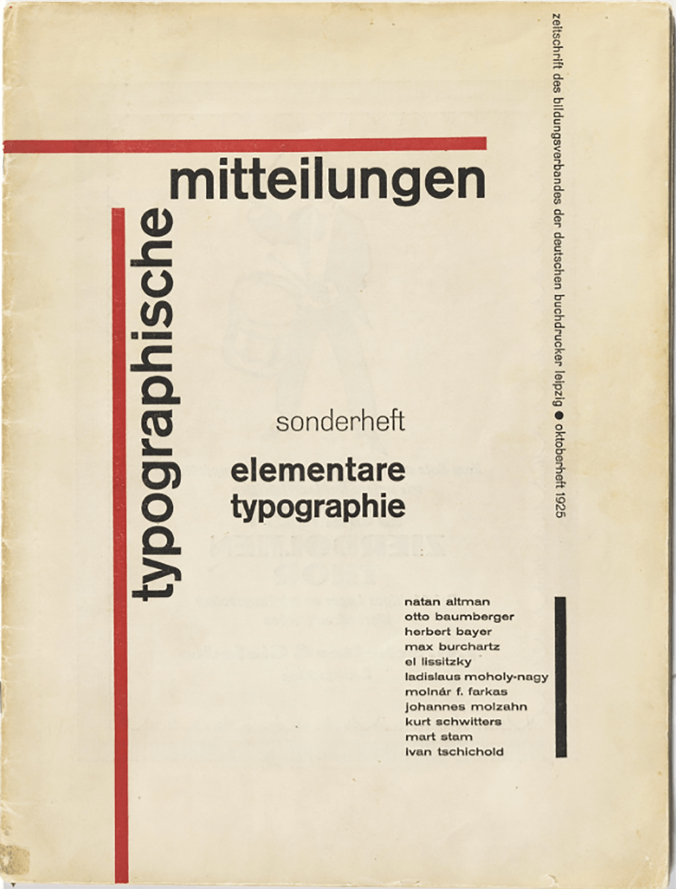

Workshop: Responsive – vom Papier ins Web
Media Queries, Breakpoints und ein Umschlag von 1925, der zügeln muss.
- Block 1vom Format zum Fluss
- Block 2Media Queries
- Block 3Plakat aufbauen
- NachmittagReduktion zu Mobile
- OptionalAusbau zu Desktop
- ZeigenLösungen vergleichen

Block 1 · Vom Format zum Fluss
Ein Plakat hat ein Format. Es ist A1 oder A3, hoch oder quer, und es bleibt so. Wer für Papier gestaltet, kennt die Fläche, bevor die erste Linie gezogen wird.
Eine Webseite kennt ihre Fläche nicht. Sie erscheint auf einem Handy, einem Tablet, einem breiten Bildschirm, in einem halb zugezogenen Browserfenster. Sie wird gedreht, gezoomt, vergrössert.
“We should embrace the fact that the web doesn’t have the same constraints (as the print medium), and design for this flexibility. But first, we must ‘accept the ebb and flow of things.’”
– Ethan Marcotte, Responsive Web Design, 2010
Ethan Marcotte hat 2010 auf A List Apart den Begriff Responsive Web Design geprägt. Er nannte drei Zutaten: ein flexibles Raster, flexible Bilder und Media Queries. Die Konzepte gelten bis heute. Inzwischen kommt oft der grösste Teil des Traffics von mobilen Geräten.
Zwei Werkzeuge: Fluidität und Media Queries
Fluidität heisst: Elemente passen sich stufenlos an, wenn das Fenster grösser oder kleiner wird. Dafür kennt ihr schon einige Mittel:
| Mittel | Was es tut |
|---|---|
%, vw, vh |
Grössen relativ zum Elternelement oder zum Viewport. 1vw = 1 % der Fensterbreite. |
fr in Grid |
Ein Anteil am verfügbaren Platz. |
flex-wrap, flex-grow, flex-shrink |
Flex-Elemente brechen um, wachsen oder schrumpfen. |
Fluidität allein reicht aber nicht. Irgendwann wird eine Zeile zu lang, eine Spalte zu eng, ein Titel zu klein. Dann braucht es einen Wechsel: ein anderes Layout ab einer bestimmten Breite. Dafür gibt es Media Queries.
Media Queries
Eine Media Query ist eine Bedingung. Das CSS darin gilt nur, wenn die Bedingung erfüllt ist:
body {
background-color: black;
}
@media (max-width: 600px) {
body {
background-color: lightblue;
}
}Auf grossen Bildschirmen ist der Hintergrund schwarz. Ist das Fenster höchstens 600px breit, wird er hellblau. Abgefragt werden kann vieles:
| Query | Fragt nach |
|---|---|
min-width / max-width |
Breite des Viewports. Das ist die wichtigste. |
orientation: portrait / landscape |
Hochformat oder Querformat. |
print |
Die Seite wird gedruckt. |
prefers-color-scheme: dark |
Die User haben den Dark Mode eingeschaltet. |
prefers-reduced-motion |
Die User möchten weniger Bewegung. |
Bedingungen lassen sich kombinieren:
@media (min-width: 30em) and (orientation: landscape) {
/* … */
}Breakpoints
Ein Breakpoint ist die Breite, an der das Layout wechselt. Oft orientiert man sich an Gerätegruppen. Diese Werte verwenden auch Frameworks wie Tailwind:
| Name | ab Breite | ungefähr |
|---|---|---|
| sm | 40em (640px) |
grosse Handys quer |
| md | 48em (768px) |
Tablet hochkant |
| lg | 64em (1024px) |
Tablet quer, kleiner Laptop |
| xl | 80em (1280px) |
Desktop |
Mobile First oder Desktop First
Media Queries haben eine Richtung.
- Mobile First: Das CSS ohne Media Query gilt für schmale Bildschirme. Mit
min-widthwird Schritt für Schritt für breitere ergänzt. - Desktop First: Das CSS ohne Media Query gilt für breite Bildschirme. Mit
max-widthwird für schmalere überschrieben.
/* Mobile First */
.beispiel { display: block; }
@media (min-width: 40em) {
.beispiel { display: flex; }
}
/* Desktop First: dasselbe Layout */
.beispiel { display: flex; }
@media (max-width: 40em) {
.beispiel { display: block; }
}Exkurs: Testen
Firefox und Chrome haben in den Entwicklertools einen Gerätemodus (Rechtsklick → Untersuchen → Symbol mit Handy und Tablet). Dort könnt ihr Gerätegrössen auswählen oder eigene Masse eingeben. Das testet die Breite, nicht aber, wie ein echtes Gerät Schriften rendert. Dafür gibt es Dienste wie BrowserStack, oder ihr schaut es euch auf dem eigenen Handy an.
Block 2 · Media Queries: etwas wechselt
Eine kleine Seite, die bei einer bestimmten Breite drei Dinge wechselt: die Hintergrundfarbe, die Spalten des Grids und die Schreibrichtung des Titels.
index.html<!DOCTYPE html>
<html lang="de">
<head>
<meta charset="UTF-8">
<meta name="viewport" content="width=device-width, initial-scale=1.0">
<title>ebb and flow</title>
<link rel="stylesheet" href="style.css">
</head>
<body>
<main class="flut">
<h1>ebb and flow</h1>
<p class="feld">accept</p>
<p class="feld">the ebb</p>
<p class="feld">and flow</p>
<p class="feld">of things</p>
</main>
</body>
</html>/* Ohne Media Query: gilt immer (Mobile First) */
body {
margin: 0;
font-family: system-ui, sans-serif;
background: #efe6d2;
color: #1f1f1f;
}
.flut {
display: grid;
grid-template-columns: 1fr;
gap: 1rem;
padding: 1rem;
}
h1 {
margin: 0;
font-size: 3rem;
line-height: 1;
}
.feld {
margin: 0;
padding: 1rem;
background: white;
font-size: 1.5rem;
}
/* Ab 48em Breite: drei Dinge wechseln */
@media (min-width: 48em) {
body {
background: #d7342b;
}
.flut {
grid-template-columns: auto 1fr 1fr;
}
h1 {
grid-row: 1 / 3;
writing-mode: vertical-rl;
transform: rotate(180deg);
}
}<meta name="viewport" …> im <head> sagt dem Handy, dass es die
echte Bildschirmbreite verwenden soll. Fehlt sie, tut das Handy so, als wäre es ein breiter Bildschirm, und
eure Media Queries greifen nicht.Schreibrichtung: writing-mode
| Wert | Wirkung |
|---|---|
horizontal-tb |
Standard: Zeilen von links nach rechts, von oben nach unten. |
vertical-rl |
Der Text läuft von oben nach unten, Buchstaben um 90° nach rechts gedreht. |
vertical-rl + transform: rotate(180deg) |
Der Text läuft von unten nach oben. Das brauchen wir gleich beim Plakat. |
sideways-lr |
Ebenfalls von unten nach oben, ohne Drehung. Wird nur von neueren Browsern unterstützt. |
em in Media Queries bezieht sich auf
die Standardschriftgrösse des Browsers, meist 16px. 48em sind also 768px. Wer im Browser die
Schrift grösser stellt, bekommt das schmalere Layout früher, und das ist gewollt: Grössere Schrift braucht
mehr Platz.Aufgaben
- Die zwei Dateien in einem Ordner anlegen und im Browser öffnen.
- Das Fenster langsam schmaler und breiter ziehen. Bei welcher Breite passiert der Wechsel? Prüft es im Gerätemodus der Entwicklertools.
- Ist
48emder richtige Ort? Verschiebt den Breakpoint dahin, wo es für den Inhalt passt, und schreibt in einem Kommentar dazu, warum. - Setzt einen zweiten Breakpoint bei
64em: Die vier Felder stehen nebeneinander, der Titel steht wieder waagrecht darüber, der Hintergrund wird schwarz. - Baut dasselbe Verhalten mit Desktop First (
max-width). Welche Variante ist kürzer?
Hinweis zu Aufgabe 4
Der Titel braucht eine ganze Zeile für sich: grid-column: 1 / -1; heisst «von der ersten
bis zur letzten Linie». Und grid-row aus dem ersten Breakpoint muss zurückgesetzt werden:
grid-row: auto;
Lösung zu Aufgabe 4
@media (min-width: 64em) {
body {
background: #1f1f1f;
}
.flut {
grid-template-columns: repeat(4, 1fr);
}
h1 {
grid-column: 1 / -1;
grid-row: auto;
writing-mode: horizontal-tb;
transform: none;
color: white;
}
}Dieser Block muss nach dem 48em-Block stehen. Bei Mobile First gilt: Die Breakpoints steigen von oben nach unten, die späteren überschreiben die früheren.
Bonus
- Schreibt eine
@media print-Regel und schaut die Druckvorschau an (Ctrl/Cmd + P). Die Seite weiss, wann sie auf Papier landet. - Probiert
@media (orientation: landscape)im Gerätemodus aus und dreht das Gerät.
Wenn etwas nicht funktioniert
| Problem | Häufige Ursache |
|---|---|
| Die Media Query greift nie | Eine geschweifte Klammer fehlt. Jede Media Query braucht zwei Ebenen: die der Query und die der Regel darin. |
| Auf dem Handy wechselt nichts | Das Viewport-Tag im <head> fehlt. |
| Der zweite Breakpoint wird ignoriert | Die Reihenfolge stimmt nicht. Bei min-width steigen die Werte von oben nach unten.
|
| Syntaxfehler, obwohl alles richtig aussieht | Leerzeichen bei and fehlen: screen and (min-width: 48em). |
Block 3 · Das Plakat aufbauen
Jetzt zügeln wir. Unsere Vorlage ist der Umschlag des Sonderhefts elementare typographie der Zeitschrift typographische mitteilungen aus dem Jahr 1925. Wir bauen ihn zuerst für ein iPad hochkant (768 × 1024px). Das Seitenverhältnis von 3:4 liegt sehr nahe beim Heft: Hier zieht das Papier fast ohne Verlust ins Web.

Exkurs: Die neue Typographie
Jan Tschichold (1902–1974), damals noch Iwan bzw. Ivan, stellte für dieses Sonderheft Arbeiten von Lissitzky, Moholy-Nagy, Bayer, Schwitters und anderen zusammen. Daraus entstand 1928 sein Buch Die neue Typographie. Die Grundsätze: Asymmetrie statt Mittelachse, Groteskschriften, wenige Farben (meist Schwarz und Rot), Balken und Flächen als Gliederung, Hierarchie über Grösse, Gewicht und Position. Oft auch durchgehende Kleinschreibung.
Und Tschichold setzte sich für die DIN-Normformate ein, also für feste, genormte Papiergrössen. Heute bauen wir seine Gestaltung in ein Medium, das gar kein Format hat.
1933 wurde Tschichold von den Nationalsozialisten verhaftet und emigrierte nach Basel. Später wandte er sich von der strengen neuen Typographie ab und arbeitete wieder klassisch.
1 · Hinschauen: das Raster finden
Bevor wir Code schreiben, schauen wir hin. Legt gedanklich ein Raster über das Heft: 12 Spalten und 16 Zeilen. Bei 3:4 sind die Zellen dann quadratisch.
Fragen zum Hinschauen:
- Welche Elemente gibt es? Was ist Text, was ist Form?
- Berühren sich die zwei roten Balken? Was bewirkt die Lücke?
- Wo greifen Elemente ineinander? Schaut euch die Ecke an, wo die zwei Titelwörter sich treffen.
- Was ist am wichtigsten, was am unwichtigsten? Woran seht ihr das?
2 · HTML: die Bausteine
Wir schreiben den Text, wie er im Heft steht: klein. Die Balken sind reine Gestaltung, deshalb leere
divs mit aria-hidden, damit Screenreader sie überspringen.
<!DOCTYPE html>
<html lang="de">
<head>
<meta charset="UTF-8">
<meta name="viewport" content="width=device-width, initial-scale=1.0">
<title>elementare typographie</title>
<link rel="preconnect" href="https://fonts.googleapis.com">
<link rel="preconnect" href="https://fonts.gstatic.com" crossorigin>
<link href="https://fonts.googleapis.com/css2?family=Jost:wght@300;500;600&display=swap" rel="stylesheet">
<link rel="stylesheet" href="tschichold.css">
</head>
<body>
<main class="plakat">
<div class="balken-waagrecht" aria-hidden="true"></div>
<div class="balken-senkrecht" aria-hidden="true"></div>
<div class="typographische">typographische</div>
<div class="mitteilungen">mitteilungen</div>
<div class="thema">
<p class="sonderheft">sonderheft</p>
<h2 class="elementare">
<span>elementare</span>
<span>typographie</span>
</h2>
</div>
</main>
</body>
</html>3 · Das Raster: CSS Grid
Zuerst Farben, Schrift und das Raster selbst. Das Plakat ist so breit wie das Fenster und hat immer das Verhältnis 3:4, wie ein Blatt Papier.
tschichold.css:root {
--papier: #efe6d2;
--rot: #d7342b;
--schwarz: #1f1f1f;
}
* {
box-sizing: border-box;
}
body {
margin: 0;
background: var(--papier);
color: var(--schwarz);
font-family: "Jost", sans-serif;
}
/* Abstände der Browser zurücksetzen */
.plakat h1,
.plakat h2,
.plakat p,
.plakat ul {
margin: 0;
line-height: 1;
}
.plakat {
width: 100%;
aspect-ratio: 3 / 4;
display: grid;
grid-template-columns: repeat(12, minmax(0, 1fr));
grid-template-rows: repeat(16, minmax(0, 1fr));
}<main class="plakat"> ein kleines Feld grid. Ein Klick darauf
blendet die Rasterlinien mit ihren Nummern ein. Lasst es während der ganzen Übung eingeschaltet.1fr darf wachsen, wenn der
Inhalt grösser ist als die Zelle, und dann verzieht sich das ganze Raster. Mit minmax(0, 1fr)
bleiben alle Zellen gleich gross.4 · Balken und Titel
Jetzt platzieren wir den waagrechten Balken und die zwei Titelwörter über die Rasterlinien.
tschichold.css.balken-waagrecht {
grid-column: 1 / 10;
grid-row: 3;
align-self: end;
height: 1.6vw;
background: var(--rot);
}
.mitteilungen {
grid-column: 4 / 11;
grid-row: 4;
font-size: 7.5vw;
font-weight: 600;
line-height: 1;
}
.typographische {
grid-column: 3 / 5;
grid-row: 5 / 12;
justify-self: start;
align-self: start;
margin-left: 1.6vw;
writing-mode: vertical-rl;
transform: rotate(180deg);
font-size: 7.5vw;
font-weight: 600;
line-height: 1;
}grid-column: 1 / 10 heisst «von
Linie 1 bis Linie 10», also über neun Spalten. -1 ist immer die letzte Linie.justify-self und align-self bestimmt ihr, wo in ihrem Bereich sie stehen.
Aufgabe: Der senkrechte rote Balken fehlt noch. Schreibt die Regel für
.balken-senkrecht selbst. Schaut dazu in die Skizze.
Hinweis 1
Der waagrechte Balken hat eine height. Was braucht der senkrechte stattdessen? Und welche
Farbe?
Hinweis 2
Der Balken liegt in derselben Spalte wie der Anfang von «typographische». Er beginnt nicht direkt unter dem waagrechten Balken: Eine Zelle bleibt frei. Und er läuft bis ganz nach unten.
5 · Flexbox im Kleinen: das Thema
Grid ordnet das Ganze, Flexbox ordnet kleine Gruppen. «sonderheft» und die zwei Zeilen von «elementare typographie» stehen rechtsbündig untereinander.
tschichold.css.thema {
display: flex;
flex-direction: column;
}
.sonderheft {
font-size: 4.2vw;
font-weight: 300;
align-self: flex-end;
}
.elementare {
font-size: 4.2vw;
display: flex;
flex-direction: column;
}
.elementare span {
display: block;
align-self: flex-end;
}flex-direction: column stellt die
Elemente untereinander. Damit wird die Querachse waagrecht, und align-self: flex-end schiebt
ein einzelnes Element nach rechts. Weil «elementare» und «typographie» je in einem span
stehen, lassen sie sich einzeln ausrichten.Aufgabe: Der Block .thema hängt noch irgendwo im Raster. Platziert ihn so,
wie es die Skizze zeigt.
Hinweis
Es sind dieselben zwei Eigenschaften wie bei den anderen Elementen. Zählt in der Skizze die Linien, nicht die Kästchen, und prüft das Ergebnis mit dem Grid-Overlay in den Entwicklertools.
Bonus: Namen und Kopfzeile
Wer fertig ist, ergänzt die zwei grauen Elemente aus der Skizze: die Namensliste mit dem schwarzen Balken und die senkrechte Kopfzeile «zeitschrift des bildungsverbandes der deutschen buchdrucker leipzig ● oktoberheft 1925».
Hinweise
- Welches HTML-Element passt zu einer Liste von Namen? Die Aufzählungspunkte braucht es nicht.
- Der schwarze Balken muss kein eigenes Element sein. Was kann eine Box an ihrem rechten Rand haben?
- Die Kopfzeile läuft von oben nach unten. Braucht sie die Drehung?
- Schaut, an welcher Linie die Kopfzeile und der schwarze Balken enden.
Wenn etwas nicht funktioniert
| Problem | Häufige Ursache |
|---|---|
| Das Raster verzieht sich, Zeilen werden unterschiedlich hoch | 1fr statt minmax(0, 1fr), oder ein Text ist zu gross für seinen
Bereich. |
| «typographische» läuft von oben nach unten | Die Drehung transform: rotate(180deg) fehlt. |
| «typographische» ist so breit wie zwei Spalten | justify-self: start fehlt. Ohne wird das Element auf den ganzen Bereich gestreckt.
|
| Ein Balken ist unsichtbar | Ein leeres div hat keine Grösse. Es braucht eine height oder
width und eine Hintergrundfarbe.
|
| Die Schrift sieht aus wie Arial | Der Google-Fonts-Link im <head> fehlt oder ist falsch geschrieben. |
| Es gibt einen horizontalen Scrollbalken | body hat noch margin, oder das Plakat hat width: 100vw
statt 100%. |
Und jetzt: das Fenster aufziehen
Euer Plakat sitzt auf dem iPad. Zieht jetzt das Fenster schmal wie ein Handy und breit wie ein Desktop. Beobachtet, ohne etwas zu ändern:
- Was passiert mit den Schriften, wenn das Fenster schmal wird? Sind sie noch lesbar?
- Was passiert mit dem ganzen Plakat auf einem breiten Bildschirm, wenn es immer 3:4 bleibt?
- Was davon ist ein Problem, was vielleicht sogar schön?
Noch ist euer Plakat ein Blatt Papier. Am Nachmittag lernt es zügeln.
Für heute Morgen
- Block 1 lesen: Was sind Fluidität, Media Queries und Breakpoints?
- Die Mini-Übung «ebb and flow» bauen und mindestens Aufgabe 1 bis 4 lösen.
- Das Plakat im Raster analysieren.
- Das Plakat für iPad hochkant aufbauen, Schritt 2 bis 5, mit den zwei Aufgaben.
- Das Fenster aufziehen und die Beobachtungen notieren. Sie sind der Ausgangspunkt für den Nachmittag.